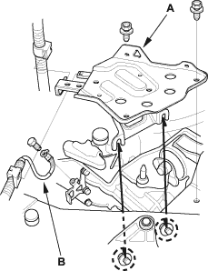
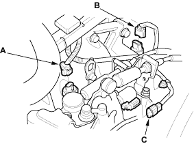
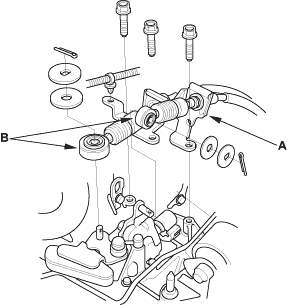
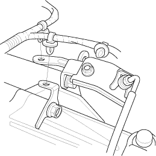

NOTE: Use fender covers to avoid damaging painted surfaces.
- Write down the frequencies for the radio's preset buttons. Disconnect the negative (-) cable first, then the positive (+) cable from the battery. Remove the battery.
- Remove the intake manifold cover (see step 5 on page 5-3).
- Remove the air cleaner (see page 11-126).
- Remove the intake air duct (see step 7 on page 5-3).
- Remove the battery tray (A).

- Disconnect the transmission ground cable (B).
- Disconnect the back-up light switch connector (A), the vehicle speed sensor (VSS) connector (B) and the reverse lockout solenoid connector (C).


- First remove the cable bracket (A), then disconnect the cables (B) from the top of the transmission housing. Carefully remove both cables and the bracket together so as not to bend the cables.

- Remove the harness clips.
